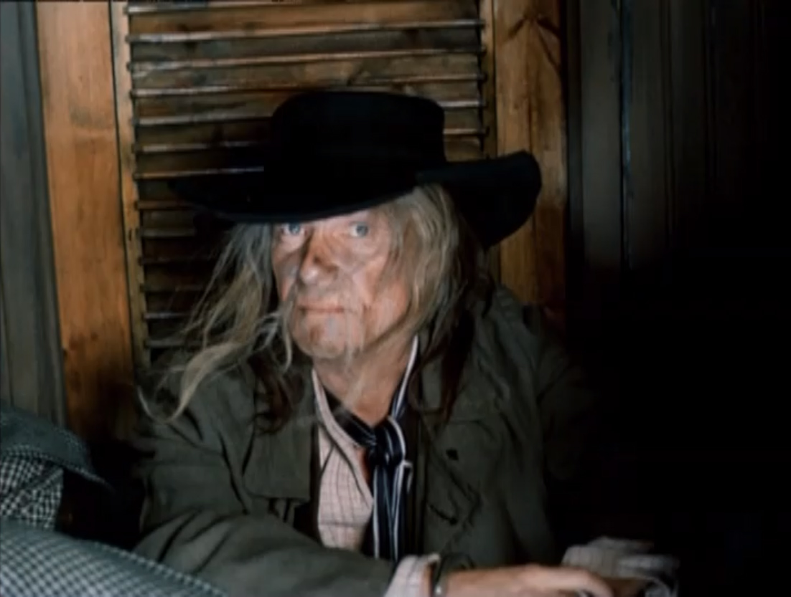

Предлагаю Вам прочесть отрывок из повести Артура Конана Дойля "Знак четырех" для изучения английского языка по методу Ильи Франка.

Более подробно с биографией писателя можно ознакомиться здесь
great
OUR captive sat in the cabin opposite to the iron box, (наш пленник сидел в каюте напротив железного сундука) which he had done so much and waited so long to gain (чтобы заполучить который, он столько сделал и так долго выжидал). He was a sunburned, reckless-eyed fellow, (это был загорелый парень с бесшабашными глазами; reckless- необдуманный, безрассудный) with a net-work of lines and wrinkles all over his mahogany features, (и сеткой морщин по всему его коричневато - красному лицу; line - веревка, шнур; морщина, складка; wrinkle - морщина; складка; mahogany - красное дерево; коричневато-красный цвет) which told of a hard, open-air life (что говорило о тяжелой жизни на открытом воздухе).
